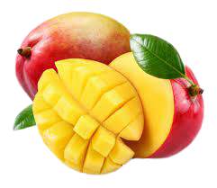
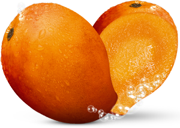
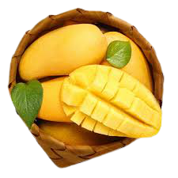

Benefits of mango
 Written on October 16th, 2021
Mango is native Southeast Asia and has been cultivated for over 4,000 years. There are hundreds of types of mango, each with a unique taste, shape, size and color. This fruit is not only delicious but also boasts an impressive nutritional profile. In fact, studies link mango and its nutrients to health benefits, such as improved immunity, digestive health and eyesight, as well as a lower risk of certain cancers. It also contains small amounts of phosphorus, pantothenic acid, calcium, selenium and iron. Mango is packed with polyphenols — plant compounds that function as antioxidants. It has over a dozen different types, including mangiferin, catechins, anthocyanins, quercetin, kaempferol, rhamnetin, benzoic acid and many others Mango is a good source of folate, several B vitamins, as well as vitamins A, C, K and E — all of which help boost immunity. ango is rich in vitamins, mineral and antioxidants and has been associated with many health benefits, including potential anticancer effects as well as improved immunity, digestive, eye, skin and hair health.
How mango is cultivated
 Written on September 16th, 2021
Mango is one of the most consumed fruits worldwide, and it is still mostly appreciated in the fresh form. However, the consumption of mango processed products has grown due to the rising demand for practical foods, increases in products shelf life and in the awareness of the benefits of fruits on human health. Mango processing leads to an increase in wastes generation since the pulp, the main product, corresponds to approximately half of the fruit mass. The mango processing wastes have a rich composition, which allows the production of several by-products. Mango by-products can be used by the final consumer, as food ingredients, and as substrates for fermentation processes, and incorporated to several industries such as foods, pharmaceuticals, fine chemicals, cosmetics, cleaning products, and personal hygiene products. Therefore they are a promising alternative for more profitable and sustainable systems since they enable the incorporation of new products into traditional processes.
Mango used in cuisne around the world
 Written on August 16th, 2021
Mangoes are widely used in cuisine. Sour, unripe mangoes are used in chutneys, pickle daals and other side dishes in Bengali cuisine. A summer drink called aam panna comes from mangoes. Mango pulp made into jelly or cooked with red gram dhal and green chillies may be served with cooked rice. Mango lassi is popular throughout South Asia, prepared by mixing ripe mangoes or mango pulp with buttermilk and sugar. Ripe mangoes are also used to make curries. Aamras is a popular thick juice made of mangoes with sugar or milk, and is consumed with chapatis or pooris. The pulp from ripe mangoes is also used to make jam called mangada. Andhra aavakaaya is a pickle made from raw, unripe, pulpy, and sour mango, mixed with chili powder, fenugreek seeds, mustard powder, salt, and groundnut oil. Mango is also used in Andhra Pradesh to make dahl preparations. Gujaratis use mango to make chunda (a sweet and spicy, grated mango delicacy). Pieces of mango can be mashed and used as a topping on ice cream or blended with milk and ice as milkshakes. Sweet glutinous rice is flavored with coconut, then served with sliced mango as a dessert. In other parts of Southeast Asia, mangoes are pickled with fish sauce and rice vinegar. Green mangoes can be used in mango salad with fish sauce and dried shrimp. Mango with condensed milk may be used as a topping for shaved ice.